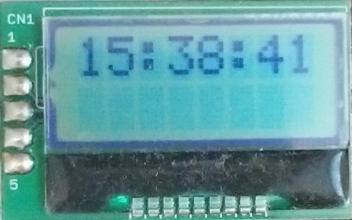

Display
micro:bit has 5x5 LED matrix, but it is not good for displaying the time. I used the cheap character display LCD controlled via I2C. The LCD is AE-AQM0802. The datasheet is disclosed.



The javaScript input.runningTime() shows how many milli second passes since it starts to run. I use this function to count the time, but this is not accurate at all unfortunately. It has the large error. For example, my micro:bit has 1 second delay every 5 minutes. This means that the BLE Clock has around 5 minutes delay in one day. This is not the clock any more.
I should implement the calibration feature. The most simple way is to send the accurate current time again in a certain interval. The interval should be long enough, for example 30 minutes or 1 hour. The BLE Clock will know how much delay it has and calculate the calibration value. Every second the lenear time will be calibarated by this value.
Here is the Javascript code. The key is that lTime is not changed. lTime is only incremented when 1 second passes based on the input.runningTime().
let Start // first runningTime when receiving the current time from the smart phone
let newStart // second runningTime when receiving the current time from the smart phone
let zeroTime // time 0 to start counting the second
let lTime // lenear time (second) converted from Hour:Minute:Second
let oldlTime // temporary copy of lTime for calculating the numerator
let numerator // time difference between lTime and oldTime
let denominator // time difference between Start and newStart in second unit
let coeff // calibration coefficient
let Val // temporary variable
// When receiving the current time again
newStart = input.runningTime()
:
:
oldlTime = lTime
LinearTime() // lTime is updated
numerator = lTime - oldlTime
denominator = Math.trunc((newStart - Start) / 1000)
coeff = (denominator + numerator) / denominator
lTime = oldlTime // lTime is back. lTime itself shoule not be updated.
// Evenry second, the linear time is displayed after calibrating the lTime by the following equation
// Val is the correct time which will be displayed on the LCD
Val = Math.trunc(zeroTime + (lTime - zeroTime) * coeff)
Val = Val % 86400 // 86400 seconds = 24 hours

This is the javascript code. You will be able to copy this code to your project.
bluetooth.onUartDataReceived(serial.delimiters(Delimiters.Fullstop), function () {
if (Start == 0) {
Start = input.runningTime()
tick = Start
BLE_Data = bluetooth.uartReadUntil(serial.delimiters(Delimiters.Fullstop))
Hour = BLE_Data.substr(0, 2)
Minute = BLE_Data.substr(2, 2)
Second = BLE_Data.substr(4, 2)
LinearTime()
zeroTime = lTime
} else {
newStart = input.runningTime()
tick = newStart
BLE_Data = bluetooth.uartReadUntil(serial.delimiters(Delimiters.Fullstop))
Hour = BLE_Data.substr(0, 2)
Minute = BLE_Data.substr(2, 2)
Second = BLE_Data.substr(4, 2)
oldlTime = lTime
LinearTime()
numerator = lTime - oldlTime
denominator = Math.trunc((newStart - Start) / 1000)
coeff = (denominator + numerator) / denominator
lTime = oldlTime
showCoefficient()
}
})
input.onButtonPressed(Button.B, function () {
timeSignal = timeSignal * -1
I2C_CMD(192, 1)
if (timeSignal == 1) {
I2CDATA(84)
} else {
I2CDATA(32)
}
})
control.onEvent(EventBusSource.MICROBIT_ID_BUTTON_A, EventBusValue.MICROBIT_BUTTON_EVT_DOWN, function () {
music.playTone(440, music.beat(BeatFraction.Half))
music.rest(music.beat(BeatFraction.Whole))
music.rest(music.beat(BeatFraction.Quarter))
music.rest(music.beat(BeatFraction.Sixteenth))
music.playTone(440, music.beat(BeatFraction.Half))
music.rest(music.beat(BeatFraction.Whole))
music.rest(music.beat(BeatFraction.Quarter))
music.rest(music.beat(BeatFraction.Sixteenth))
music.playTone(440, music.beat(BeatFraction.Half))
music.rest(music.beat(BeatFraction.Whole))
music.rest(music.beat(BeatFraction.Quarter))
music.rest(music.beat(BeatFraction.Sixteenth))
music.playTone(880, music.beat(BeatFraction.Double))
})
function showTime (Str: string) {
temp_val = 0
for (let i = 0; i < 2; i++) {
Val = parseFloat(Str.charAt(temp_val))
I2CDATA(Val + 48)
temp_val += 1
}
}
function I2C_CMD (Command: number, Time: number) {
pins.i2cWriteNumber(
AQM0802_Address,
Command,
NumberFormat.UInt16BE,
false
)
basic.pause(Time)
}
function I2CDATA (Data: number) {
pins.i2cWriteNumber(
AQM0802_Address,
Data + 16384,
NumberFormat.UInt16BE,
false
)
}
function showCoefficient () {
I2C_CMD(194, 1)
I2CDATA(parseFloat(convertToText(coeff).charAt(0)) + 48)
I2CDATA(46)
I2CDATA(parseFloat(convertToText(coeff).charAt(2)) + 48)
I2CDATA(parseFloat(convertToText(coeff).charAt(3)) + 48)
I2CDATA(parseFloat(convertToText(coeff).charAt(4)) + 48)
}
function linearTostring () {
Val = Math.trunc(zeroTime + (lTime - zeroTime) * coeff)
Val = Val % 86400
temp_val = Val % 60
if (temp_val < 10) {
Second = "0" + convertToText(temp_val)
} else {
Second = convertToText(temp_val)
}
temp_val = Val / 60
temp_val = temp_val % 60
if (temp_val < 10) {
Minute = "0" + convertToText(temp_val)
} else {
Minute = convertToText(temp_val)
}
temp_val = Val / 3600
if (temp_val < 10) {
Hour = "0" + convertToText(temp_val)
} else {
Hour = convertToText(temp_val)
}
}
function LinearTime () {
lTime = parseFloat(Second)
lTime = lTime + parseFloat(Minute) * 60
lTime = lTime + parseFloat(Hour) * 3600
}
let Now = 0
let Val = 0
let temp_val = 0
let oldlTime = 0
let newStart = 0
let lTime = 0
let zeroTime = 0
let BLE_Data = ""
let coeff = 0
let timeSignal = 0
let denominator = 0
let numerator = 0
let tick = 0
let Start = 0
let Second = ""
let Minute = ""
let Hour = ""
let AQM0802_Address = 0
bluetooth.startUartService()
AQM0802_Address = 62
I2C_CMD(56, 1)
I2C_CMD(57, 1)
I2C_CMD(20, 1)
I2C_CMD(115, 1)
I2C_CMD(86, 1)
I2C_CMD(108, 300)
I2C_CMD(56, 1)
I2C_CMD(12, 1)
I2C_CMD(1, 2)
I2C_CMD(128, 1)
Hour = String.fromCharCode(48)
Minute = String.fromCharCode(48)
Second = String.fromCharCode(48)
Start = 0
tick = 0
numerator = 0
denominator = 1
timeSignal = -1
coeff = 1
basic.forever(function () {
if (tick > 0) {
Now = input.runningTime()
if (Now - tick >= 1000) {
tick = tick + 1000
lTime += 1
linearTostring()
I2C_CMD(128, 1)
showTime(Hour)
I2CDATA(58)
showTime(Minute)
I2CDATA(58)
showTime(Second)
if (timeSignal == 1) {
if (Second == "56") {
control.raiseEvent(
EventBusSource.MICROBIT_ID_BUTTON_A,
EventBusValue.MICROBIT_BUTTON_EVT_DOWN
)
}
}
}
}
})
The main problem is the accuracy. After calibration was done (the calibration interval is a few hours), I left the BLE Clock for a long time to check how much difference from the actual time.
The BLE Clock started 3:00 PM 9/8/2019. At 11:00 AM 9/21, it was 1 minute 5 second faster than the actual time. This means the error is 211 mili-second per Hour. Let's say that 1 minute faster per 10 days. This is not too bad, however, 1 month later, you will be aware of 3 minutes difference.
I evaluated the power consumption. If the time tone is disable, the overall system consumes 2.2 mA. The AA battery has approximately 3000mAH capacity. If 2 pieces AA batteries are connected, the BLE Clock works around 1500 hours. This is about 60 days. Every 2 months, you need to change the battery. Well, you don't want to use this clock.
If the average current is low, the battery capacity will be bigger. Less current, more battery life. I don't have the exact data of battery capacity if the averae current is less than 1 mA, but let's say 4000mAH. If the BLE Clock needs to work at least 1 year, the average current should be less than 450 micro A. The LCD consumes 150 micro A, so the main CPU should be less than 300 micro A.
Let's try to reduce the power consumption.